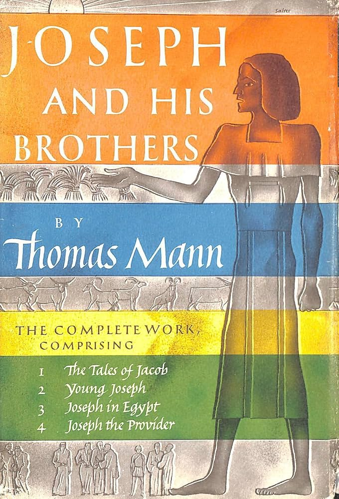

Joseph and His Brothers
Author: Joseph Mann
Year read: 2026
Month read: September
Recommended by: Sid having a role
Genre: Historical
Book description: Thomas Mann regarded his monumental retelling of the biblical story of Joseph as his magnum opus. He conceived of the four parts–The Stories of Jacob, Young Joseph, Joseph in Egypt, and Joseph the Provider–as a unified narrative, a “mythological novel” of Joseph’s fall into slavery and his rise to be lord over Egypt. Deploying lavish, persuasive detail, Mann conjures for us the world of patriarchs and pharaohs, the ancient civilizations of Egypt, Mesopotamia, and Palestine, and the universal force of human love in all its beauty, desperation, absurdity, and pain. The result is a brilliant amalgam of humor, emotion, psychological insight, and epic grandeur.
Club thoughts: None, we have not read it yet :/